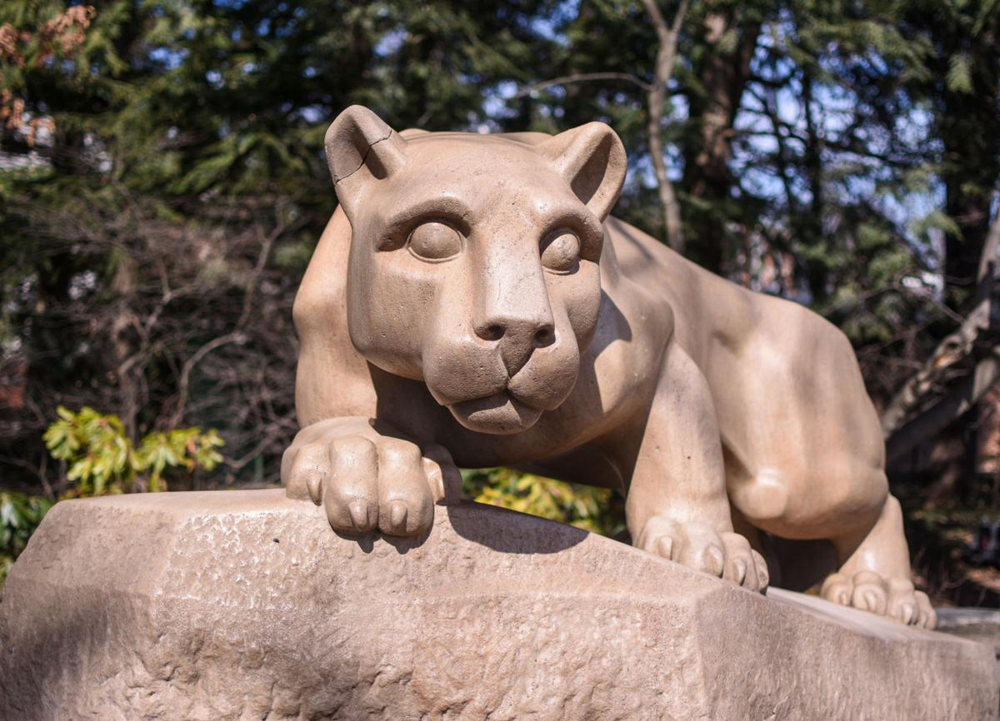

Welcome to the Nittany Lion Shrine!
The Nittany Lion Shrine is a landmark location on campus for anyone looking to take a picture, whether it be for recreation, graduation, or any other reason. The Nittany Lion Shrine is located close to West Dorms and the Westgate Building. The shrine was a gift from the class of 1940!
